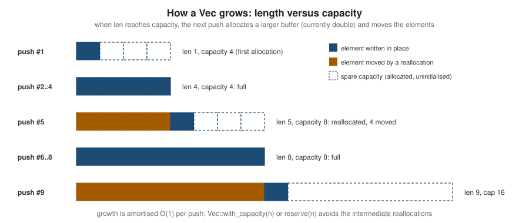

Collections
|
This content was generated with the assistance of AI and should be verified against the official documentation before being relied on in production. |
This page is written against Rust 1.99.0 and the 2024 edition, checked on 2026-10-06. The standard library’s
std::collections module provides the general-purpose data structures most programs need. All of them own their
elements, store them on the heap, grow as needed, and implement IntoIterator, FromIterator (collect) and
Extend. Strings are covered on Strings & Text; slices,
which most Vec methods come from, on Slices &
Dynamically Sized Types.
Which collection?
The standard library documentation gives a simple decision guide, summarised here:
| Use | When you want … |
|---|---|
|
a sequence to collect items, process them, or access them by index; a stack (push/pop at the end). The default choice. |
|
a queue: efficient push and pop at both ends |
|
almost never; only to split and append lists in O(1) where you can prove it matters |
|
to associate keys with values, with fast lookup, in no particular order |
|
a set of unique values, fast membership tests |
|
a map sorted by key: ordered iteration, range queries, smallest/largest key |
|
a sorted set |
|
a priority queue: always get the largest (or, with |
Vec<T>
Vec<T> is a contiguous, growable array. The Vec value itself is three words — a pointer to the heap buffer, the
capacity (how many elements fit in the buffer) and the length (how many are initialised) — and it dereferences to
the slice [T], so every slice method is available.
fn main() {
let mut titles: Vec<String> = Vec::new(); // no allocation yet
titles.push("Dune".to_string());
titles.push("Emma".to_string());
let mut shelf = vec!["Kindred", "Beloved"]; // vec! macro
shelf.push("Ulysses");
let mut zeros = vec![0u8; 16]; // 16 zeros
zeros.truncate(8);
println!("{} {} {}", titles.len(), shelf[1], zeros.len());
if let Some(last) = titles.pop() { // remove from the end
println!("popped {last}");
}
titles.insert(0, "Middlemarch".into()); // O(n): shifts elements
titles.extend(shelf.iter().map(|s| s.to_string()));
let removed = titles.remove(1); // O(n)
println!("{titles:?} (removed {removed})");
}Capacity and growth
When a push finds len == capacity, the Vec allocates a larger buffer (currently twice the capacity), moves the
elements over and frees the old buffer. Pushing is therefore amortised O(1), but every reallocation costs a copy, and
references into the old buffer would dangle — which is exactly why the borrow checker forbids pushing while a
reference into the Vec is alive.

fn main() {
let mut v: Vec<u32> = Vec::new();
let mut last_cap = v.capacity();
for i in 0..20 {
v.push(i);
if v.capacity() != last_cap {
println!("len {:>2} -> capacity {}", v.len(), v.capacity());
last_cap = v.capacity();
}
}
// len 1 -> capacity 4
// len 5 -> capacity 8
// len 9 -> capacity 16
// len 17 -> capacity 32
let mut sized = Vec::with_capacity(1_000); // one allocation up front
sized.extend(0..1_000);
println!("{} {}", sized.len(), sized.capacity()); // 1000 1000
sized.truncate(10);
sized.shrink_to_fit(); // give memory back
println!("{} {}", sized.len(), sized.capacity()); // 10 10
}The exact growth strategy and the minimum first capacity are implementation details (the first allocation is larger
for byte-sized elements); code must not depend on them. When the final size is known or can be estimated, use
Vec::with_capacity(n) or reserve(n); collect() from an iterator with an exact size hint allocates once by itself.
Removing and filtering
fn main() {
let mut loans = vec![("alice", 3), ("bob", 0), ("carol", 12), ("dave", 0), ("erin", 5)];
loans.retain(|&(_, days)| days > 0); // keep in place, order preserved
println!("{loans:?}"); // [("alice", 3), ("carol", 12), ("erin", 5)]
let overdue: Vec<_> = loans.extract_if(.., |(_, days)| *days > 10).collect(); // 1.87: remove *and* return
println!("{overdue:?} / {loans:?}"); // [("carol", 12)] / [("alice", 3), ("erin", 5)]
let short = loans.pop_if(|(_, days)| *days < 4); // 1.86: pop the last one if it matches
println!("{short:?}"); // None -- the last one is erin, 5 days
let drained: Vec<_> = loans.drain(..1).collect(); // remove a range, keep the allocation
println!("{drained:?} / {loans:?}");
let mut ratings = vec![5, 5, 4, 4, 4, 3, 5];
ratings.dedup(); // removes *consecutive* duplicates
println!("{ratings:?}"); // [5, 4, 3, 5]
ratings.sort_unstable();
ratings.dedup(); // sort first for full deduplication
println!("{ratings:?}"); // [3, 4, 5]
let mut queue = vec![String::from("Dune")];
let slot = queue.push_mut(String::from("Emma")); // 1.95: push and get &mut to the new element
slot.push_str(" (large print)");
println!("{queue:?}");
}Source: std: Vec::extract_if
swap_remove(i) removes an element in O(1) by moving the last element into its place, when order does not matter.
split_off, append, resize, splice and dedup_by_key round out the API.
VecDeque<T> and LinkedList<T>
VecDeque is a ring buffer: push_front, push_back, pop_front and pop_back are all O(1), and indexing is still
O(1). Use it for queues, sliding windows and breadth-first searches.
use std::collections::VecDeque;
fn main() {
let mut holds: VecDeque<&str> = VecDeque::new(); // reservation queue for one book
holds.push_back("alice");
holds.push_back("bob");
holds.push_front("vip"); // jumps the queue
while let Some(member) = holds.pop_front() {
println!("notify {member}");
}
let mut window: VecDeque<u32> = VecDeque::with_capacity(3); // last three ratings
for r in [5, 4, 2, 3, 5] {
if window.len() == 3 {
window.pop_front();
}
window.push_back(r);
}
println!("{window:?}"); // [2, 3, 5]
}Source: std::collections::VecDeque
LinkedList is a doubly linked list. Every element is a separate allocation and traversal is cache-unfriendly, so it
is slower than Vec or VecDeque for almost every workload; the standard library itself recommends against it except
for O(1) splitting and appending.
HashMap<K, V> and HashSet<T>
HashMap stores key-value pairs in a hash table (a port of Google’s SwissTable, from the hashbrown crate). Lookups,
inserts and removals are O(1) on average. Iteration order is unspecified and changes between runs.
use std::collections::{HashMap, HashSet};
fn main() {
let mut copies: HashMap<String, u32> = HashMap::new();
copies.insert("Dune".to_string(), 2);
copies.insert("Emma".to_string(), 1);
let old = copies.insert("Dune".to_string(), 3); // replaces and returns the old value
println!("{old:?} {:?} {}", copies.get("Dune"), copies.contains_key("Ulysses"));
if let Some(n) = copies.get_mut("Emma") {
*n += 1;
}
let removed = copies.remove("Emma");
println!("{removed:?} {}", copies.len());
let from_pairs: HashMap<&str, u16> = [("Dune", 1965), ("Emma", 1815)].into_iter().collect();
let literal = HashMap::from([("Kindred", 1979)]);
println!("{from_pairs:?} {literal:?}");
let tags: HashSet<&str> = ["sci-fi", "classic", "sci-fi"].into_iter().collect();
let wanted: HashSet<&str> = ["classic", "romance"].into_iter().collect();
println!("{} {:?}", tags.len(), tags.intersection(&wanted).collect::<Vec<_>>()); // 2 ["classic"]
}get takes any type the key can be borrowed as (via the Borrow trait), so a HashMap<String, V> can be queried
with a &str without allocating.
The entry API
The entry API does "look up, then insert or update" with a single hash lookup and without fighting the borrow
checker. map.entry(key) returns an Entry, either Occupied or Vacant, with helpers for the common cases:
use std::collections::HashMap;
fn main() {
let text = "the dune the emma the dune";
let mut counts: HashMap<&str, usize> = HashMap::new();
for word in text.split_whitespace() {
*counts.entry(word).or_insert(0) += 1; // insert 0 if missing, then increment
}
println!("{:?}", counts.get("the")); // Some(3)
let mut by_author: HashMap<&str, Vec<&str>> = HashMap::new();
for (author, title) in [("Herbert", "Dune"), ("Austen", "Emma"), ("Herbert", "Dune Messiah")] {
by_author.entry(author).or_default().push(title); // Vec::default() if missing
}
println!("{:?}", by_author["Herbert"]);
let mut stock: HashMap<&str, u32> = HashMap::from([("Dune", 1)]);
stock.entry("Dune").and_modify(|n| *n += 1).or_insert(1);
stock.entry("Emma").and_modify(|n| *n += 1).or_insert(1);
let mut items: Vec<_> = stock.into_iter().collect();
items.sort();
println!("{items:?}"); // [("Dune", 2), ("Emma", 1)]
}Hashing, Hash and Eq
Keys must implement Eq and Hash, and the two must agree: if a == b, then hash(a) == hash(b). Deriving both
(#[derive(PartialEq, Eq, Hash)]) guarantees that. Floats implement neither (NaN breaks equality), so they cannot be
keys directly; wrap them in a newtype that defines a total order, or use their bit pattern. Mutating a key while it is
in the map (possible only through interior mutability) breaks the table — don’t.
By default HashMap uses SipHash-1-3 with a random per-process key. It is not the fastest hash, but it is resistant
to HashDoS attacks, where an attacker sends keys chosen to collide and turns every lookup into O(n). For keys that
cannot be attacker-controlled (integers you generated, internal IDs), a faster hasher can be plugged in with the third
type parameter, for example HashMap<u64, V, foldhash::fast::RandomState> or the rustc-hash crate’s FxHashMap;
benchmark before switching.
Source: std::collections::HashMap
BTreeMap<K, V> and BTreeSet<T>
BTreeMap keeps keys sorted (it requires Ord instead of Hash). Operations are O(log n). Choose it when you need
ordered iteration, range queries, or the first/last key, and for small maps where it is often as fast as HashMap:
use std::collections::{BTreeMap, BTreeSet};
fn main() {
let mut by_year: BTreeMap<u16, &str> = BTreeMap::new();
for (y, t) in [(1965, "Dune"), (1815, "Emma"), (1987, "Beloved"), (1922, "Ulysses"), (1979, "Kindred")] {
by_year.insert(y, t);
}
for (year, title) in &by_year {
print!("{year}:{title} "); // iterates in key order
}
println!();
let twentieth: Vec<_> = by_year.range(1900..2000).map(|(_, t)| *t).collect();
println!("{twentieth:?}"); // ["Ulysses", "Dune", "Kindred", "Beloved"]
println!("{:?} {:?}", by_year.first_key_value(), by_year.last_key_value());
let isbn_prefixes: BTreeSet<&str> = ["979", "978", "978"].into_iter().collect();
println!("{isbn_prefixes:?}"); // {"978", "979"}
}Source: std::collections::BTreeMap
BinaryHeap<T>
BinaryHeap is a max-heap: push is O(log n) and pop returns the largest element in O(log n); peek is O(1).
Wrap elements in std::cmp::Reverse for a min-heap, which is the usual way to process the earliest deadline first:
use std::cmp::Reverse;
use std::collections::BinaryHeap;
fn main() {
// (due day, member): the soonest due date should come out first.
let mut reminders = BinaryHeap::new();
reminders.push(Reverse((14, "alice")));
reminders.push(Reverse((3, "bob")));
reminders.push(Reverse((7, "carol")));
while let Some(Reverse((day, member))) = reminders.pop() {
println!("day {day}: remind {member}"); // 3 bob, 7 carol, 14 alice
}
}Source: std::collections::BinaryHeap
Complexity
| Collection | get(i) / lookup | insert | remove | append / push | notes |
|---|---|---|---|---|---|
|
O(1) |
O(n) (O(1) at end) |
O(n) (O(1) at end) |
O(1) amortised |
|
|
O(1) |
O(min(i, n-i)) |
O(min(i, n-i)) |
O(1) both ends |
ring buffer |
|
O(min(i, n-i)) |
O(1) at a cursor (unstable) |
O(1) at a cursor |
O(1) both ends |
|
|
O(1) average |
O(1) average |
O(1) average |
— |
unordered |
|
O(log n) |
O(log n) |
O(log n) |
— |
sorted; |
|
|
O(log n) |
|
— |
max-heap |
Source: std::collections: Performance
Common errors
-
E0502 when inserting into a collection while holding a reference obtained from it (
let first = &v[0]; v.push(x);): finish with the reference first, or store an index. -
E0277 "the trait bound
K: Hashis not satisfied" or "`f64: Eq` is not satisfied": deriveHash/Eq, or use a key type that has them. -
E0507 when moving a value out of
v[i]ormap[&k]: useremove,swap_remove,mem::take, or clone. -
Indexing a
HashMapwithmap[&key]panics if the key is missing; useget.